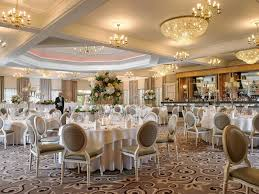
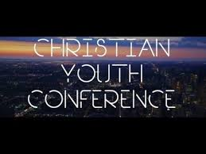
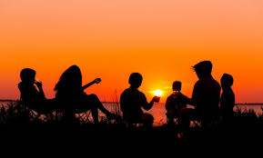

Event

Wedding
Wonderfull News!!!!!!!!!!
Weddings are amazing and married life is great! This is more of a reason couple Muzinga is planning to give it a shot in the month of June and live happily ever after.

Save The Date
The wedding will be on the 25th of June 2022
Church Ceremony will start at 12:30pm - 2:00pm
Celebration Party will be at Galway Bay Hotel from 8:00pm - 11:00pm
Restoration Church Members are all welcome

christian Youth Conference
There will be a christian youth conference for 3 days in July 2022 at Restoration church
Theme: Living For Jesus Chirst
- GIVE YOUR LIFE TO JESUS CHRIST
Thursday 21.07.2022 : 6:00pm - 8:00pm
- IT IS POSSIBLE WITH JESUS CHRIST
Friday 22.07.2022 : 6:00pm - 8:00pm
- POWER OF TIME
Saturday 23.07.2022: 6:00 -8:00pm

Summer Camp
A Great news for the church memebers as there will be a summer camp trip to Democratic Reulic of Congo in August for two weeks
The dates will be given after the big Youth Conference